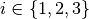

Connectivity module¶
Connectivity function is as follows:
where  is category index
In order to compute the function for a given value for a discrete image, it is possible to shift one copy the image and check the number of overlapping pixels of the same category (label) and number of pixels of the same component. Dividing number of the pixels of the same component by the number of the pixels of the same category gives the connectivity function for the given h.
Example: connectivity function¶
We will use the categorical soil cracks example
import numpy as np
import matplotlib.pyplot as plt
import mpstool
# Load image data stored in a text file and reshape to 2D numpy array
image = np.loadtxt('2D.txt').reshape(550, 500)
plt.imshow(image)
plt.show()
We can compute the connectivity function for each category:
connectivity_axis0 = mpstool.connectivity.get_function(image, axis=0)
connectivity_axis1 = mpstool.connectivity.get_function(image, axis=1)
Let us now display the result:
# Display function along axis 0 for each category on a plot
categories = mpstool.connectivity.get_categories(image)
for category in categories:
plt.plot(connectivity_axis0[category])
plt.legend(categories)
plt.xlabel('distance (pixels)')
plt.ylabel('connectivity along axis 0')
plt.show()
# Display function along axis 1 for each category on a plot
categories = mpstool.connectivity.get_categories(image)
for category in categories:
plt.plot(connectivity_axis1[category])
plt.legend(categories)
plt.xlabel('distance (pixels)')
plt.ylabel('connectivity along axis 1')
plt.show()
The 3D example is analogous:
import numpy as np
import matplotlib.pyplot as plt
import mpstool
image = np.loadtxt('3D.txt').reshape((100,90,80))
c0 = mpstool.connectivity.get_function(image, axis=0)
c1 = mpstool.connectivity.get_function(image, axis=1)
c2 = mpstool.connectivity.get_function(image, axis=2)
# Connectivity of category 1
plt.plot(c0[1])
plt.plot(c1[1])
plt.plot(c2[1])
plt.ylim([0,1.1])
plt.show()
# Connectivity of category 2
plt.plot(c0[2])
plt.plot(c1[2])
plt.plot(c2[2])
plt.ylim([0,1.1])
plt.show()
Connectivity map¶
For a 2D array it is also possible to compute a connectivity map:
# Compute the connectivity map for each category
connectivity = mpstool.connectivity.get_map(image)
# Display function for each category on a plot
categories = mpstool.connectivity.get_categories(image)
for category in categories:
plt.imshow(connectivity[category])
plt.xlabel('y (pixels)')
plt.ylabel('x (pixels)')
plt.colorbar()
plt.show()
Connected components¶
The library also provides a function for retrieving connected components:
# Get the connected components
connected_components = mpstool.connectivity.get_components(image)
plt.imshow(connected_components)
plt.show()
Converting continuous image to categorical¶
A function for categorizing a continuous image is provided:
image = np.loadtxt('continuous.txt').reshape((335,408))
plt.imshow(image)
plt.colorbar()
plt.show()
thresholds = [100, 200]
image_categorized = mpstool.connectivity.categorize(image, thresholds)
plt.imshow(image_categorized)
plt.colorbar()
plt.show()